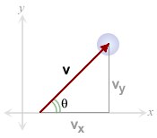
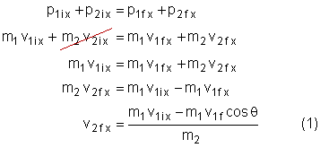
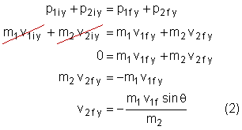
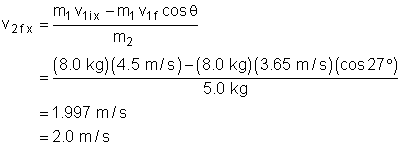
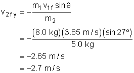
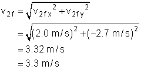
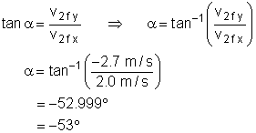

Prerequisites
Students should have a basic understanding of vectors and vector components and a working knowledge of trigonometry. Students should be familiar with the Law of Conservation of Momentum and how to set-up and solve collision questions.
Learning Outcomes
In this lesson you will learn about momentum and two dimensional collisions. Students will be able to define and calculate the momentum of an object. Students will also be able to show that momentum is conserved in 2D collisions. As well, students will be able to analyse and predict the outcome of collisions using conservation laws.
Instructions
Students should know how the applet functions, as described in Help and ShowMe. The applet should be open. The step-by-step instructions on this page are to be done in the applet. You may need to toggle back and forth between instructions and applet if your screen space is limited.
In previous lessons, you learned about momentum and the law of conservation of momentum in one-dimensions. In this lesson, you will examine momentum in two-dimensional situations. As review, complete the following questions about momentum and collisions.

Momentum and Vector Components
Momentum is "mass in motion", or a measure of how much motion an
object has. Algebraically, momentum is defined as the product of an object's
mass and
Any vector can be resolved into components. Generally, we resolve vectors into horizontal (x) and vertical (y) components. The diagram to the right shows a vector, v, resolved into its x and y components.
Using the diagram to the right and some basic trigonometric identities, answer the following questions.

2D Collisions and Conservation of momentum
In previous lessons you have already seen that the total momentum of a system is conserved during a collision. But in those lessons, you were only looking at one-dimensional collisions. Let's now investigate how momentum is conserved in two-dimensional collisions. Use the applet to help you answer the following questions. Un-check Show CM and Show CM Frame.
|
Collision 1
|
|||||||
|
Object
|
mass
(kg) |
vinitial
(m/s) |
vfinal
(m/s) |
D
v
(m/s) |
pinitial
(kg·m/s) |
pfinal
(kg·m/s) |
D
p
(kg·m/s) |
|
Blue
|
|
|
|
|
|
|
|
|
Green
|
|
|
|
|
|
|
|

In the previous section you discovered that the total momentum of a system is conserved, as long as there are no external forces acting on a system. Let's use the conservation of momentum to analyse the following collisions. When solving multi-step questions, it is useful to follow a four-step method:
Let's do an example question together:
Example:
An 8.0 kg mass collides elastically with a 5.0 kg mass that is at rest. Initially, the 8.0 kg mass was travelling to the right at 4.5 m/s. After the collision, it is moving with a speed of 3.65 m/s and at an angle of 27° to its original direction. What is the final speed and direction of motion for the 5.0 kg mass?
Solution:
| Conservation of momentum in the x-direction:  |
Conservation of momentum in the y-direction:  |
| Mass 2's final velocity in the x-direction:  |
Mass 2's final velocity in the y-direction:  |
| Mass 2's final velocity:  |
Direction of motion:  |
Now it's your turn! Solve each question using the four-step method. Use the applet to help visualise the collisions and also to check your answers. Remember that to set the scatter angle, you must actually adjust the impact parameter (while viewing the data box, adjust the impact parameter until the scatter angle is correct).

In this lesson you looked at collision that occur in two-dimensions. You saw that the total momentum of a system is conserved during a collision. Moreover, the total momentum in the x-direction and in the y-direction is also conserved during a collision. The key points you looked at are: